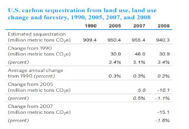
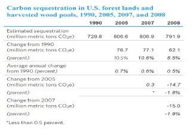
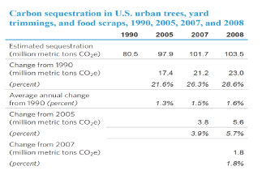

{kind=link}
{kind=link}
Emissions of Greenhouse Gases in the U. S.
Release Date: March 31, 2011 | Next Release Date: Report Discontinued | Report Number: DOE/EIA-0573(2009)
6. Land use
6.1. Total land use, land use change, and forests
This chapter presents estimates of carbon sequestration (removal from the atmosphere) and emissions (release into the atmosphere) from forests, croplands, grasslands, and residential areas (urban trees, grass clippings, and food scraps) in the United States. In 2008, land use, land use change, and forests were responsible for estimated net carbon sequestration of 940 MMTCO2e (Table 31), representing 16 percent of total U.S. CO2 emissions.
The largest sequestration category in 2008 was forest lands and harvested wood pools,49 with estimated sequestration increasing from 730 MMTCO2e in 1990 to 792 MMTCO2e in 2008. The second-largest carbon sequestration category was urban trees,50 responsible for 57 MMTCO2e in 1990 and 94 MMTCO2e in 2008. Landfilled yard trimmings and food scraps, both of which also contain carbon, sequestered 10 MMTCO2e in 2008. Croplands and grasslands were estimated to have sequestered 18 MMTCO2e and 9 MMTCO2e, respectively, in 2008.51 Land converted to grassland sequestered 24 MMTCO2e in 2008.
Preparing soils for cultivation involves drainage and tilling, both of which lead to the release of carbon from soil to the atmosphere. In 2008, land that became cropland emitted 6 MMTCO2e.
{kind=link}

6.2. Forest lands and harvested wood pools
Forest ecosystems constitute the largest source of carbon sequestration in the United States, with the sequestered carbon contained in above-ground or below-ground components of trees and other forest vegetation, as well as dead wood and litter.52 In 2008, forests and harvested wood products sequestered 792 MMTCO2e (Table 32). More than one-half of the forest total (397 out of 704 MMTCO2e) was above-ground biomass in the form of tree trunks and branches. Soil organic carbon was the second-largest category of sequestered carbon in 2008, estimated at 146 MMTCO2e. Another large category in 2008 was below-ground biomass—i.e., the root systems of trees and other plants—at an estimated total of 79 MMTCO2e. Litter and dead wood, which are rich in plant matter that continues to be mainly carbon, accounted for 56 MMTCO2e and 26 MMTCO2e, respectively, of the carbon sequestered in forests in 2008. Although some of the carbon in litter and dead wood is released through decomposition, the continuing fall of trunks, branches, leaves, and other plant materials adds to the mass of litter and dead wood, leading to an overall increase in carbon stored.
Harvested wood in the form of durable wood products, either in use or in landfills, accounted for 132 MMTCO2e of carbon sequestration in 1990. That total dropped to 88 MMTCO2e in 2008, primarily as a result of greater use of imported wood, imported wood products, and wood substitutes.53
{kind=link}

6.3. Croplands and grasslands
Croplands and grasslands fall into four categories: cropland remaining cropland; land converted to cropland; grassland remaining grassland; and land converted to grassland.
Organic soils contain 12 to 20 percent carbon; mineral soils contain 1 to 6 percent carbon. Soils gain carbon through the decomposition of dead plant matter by soil microorganisms and lose carbon through drainage and agricultural activities, such as tilling. Over time, unless the soil is disturbed repeatedly, its carbon content reaches a balance between sequestration and emissions. Carbon sequestration and emissions from the mineral and organic soils in croplands and grasslands vary, depending on how the lands are maintained or converted. Mineral and organic soils can gain (sequester) or lose (emit) carbon, depending on climate, land use, and soil properties.
As a whole, the estimated aggregate flux of CO2 for the four categories of croplands and grasslands resulted in the sequestration of 45 MMTCO2e in 2008 Table 33. Land Converted to Grassland, Cropland Remaining Cropland, and Grassland Remaining Grassland sequestered 24, 18, and 9 MMTCO2e, respectively, and Land Converted to Cropland emitted 6 MMTCO2e. Areas were classified as Cropland Remaining Cropland in a given year between 1990 and 2008 if the land use had been cropland for the previous 20 years. For organic soils, annual fluxes were estimated from the U.S. Department of Agriculture's National Resources Inventory (NRI); the 1990 NRI estimate was applied for 1990-1993, and the 1997 NRI estimate was applied for 1993-2008.
{kind=link}
6.4. Urban trees, yard trimmings, and food scraps
In 2008, urban trees, yard trimmings, and food scraps sequestered 104 MMTCO2e (Table 34).
Urban trees sequester carbon through photosynthesis, just as forest trees do. Because urban trees often have more space in urban settings such as streets and parks than do trees in forests, they tend to grow bigger and sequester more carbon per tree.
The estimate of carbon sequestration in yard trimmings is for the portion of grass clippings, leaves, and other garden wastes deposited in landfills. Yard trimmings that are composted at individual residences or in municipal composting programs or are used in waste-to-energy activities are not accounted for in this category. From 1990 to 2008, the estimate for carbon sequestration in yard trimmings has changed more than the estimates for the two other categories combined, with a decrease of 70 percent attributed to an increase in municipal composting programs.
From 1990 to 2008, a slight increase in landfill disposal of food scraps was far outweighed by the decrease in disposal of yard trimmings, leading to a net decrease in annual carbon sequestration at landfills from 24 MMTCO2e in 1990 to 10 MMTCO2e in 2008.
{kind=link}

6.5. Carbon dioxide emissions from bioenergy
According to current international convention, CO2 released through the combustion of energy or fuel derived from plants (bioenergy or biofuels) is excluded from reported energy-related emissions. The related fossil fuel emissions from the transportation and processing of the biological feedstocks are captured within overall energy sector emissions, but currently they are not allocated to the biofuels. Additionally, the CO2 released from biofuel or bioenergy combustion is assumed to be fully accounted for by the uptake of carbon during the growth of the feedstock used to produce the biofuels or bioenergy. However, analysts have debated whether the increased use of biomass energy may result in a loss of terrestrial carbon stocks and foregone future sequestration by natural vegetation. The initial loss of carbon stocks in natural vegetation cleared to grow biomass feedstocks and the foregone future removal of CO2 are not captured in energy sector emissions. To capture the potential net emissions, the international convention for GHG inventories is to report the net carbon flux from land use change (such as when forests are converted to cropland to grow feedstocks) in the Land Use category. Although accounting for land use emissions is more challenging than for most of the other emissions sources, emissions and sequestration associated with domestic U.S. land use change should in principle be accounted for in this chapter of the inventory report. However, from a global greenhouse gas emissions perspective, the key uncertainty regarding aggregate net biogenic emissions is indirect land use change that occurs abroad. As discussed below, there are many factors that ultimately determine the net effect of biogenic energy sources on CO2 emissions.
For the first time, this report is providing estimates of direct biogenic CO2 emissions from combustion of biofuels and bioenergy (see Table 35).54 Other greenhouse gases, such as methane released from wood that is burned in home fireplaces and woodstoves, are counted in EIA's emissions inventory, because they are not considered part of the natural carbon cycle.
Direct biogenic combustion emissions by sector
Emissions estimates are provided here for direct emissions from bioenergy consumption in the four end-use sectors (residential, commercial, industrial, and transportation) and for the electric power sector.
Residential emissions from result from the use of wood and wood-derived fuels, principally for heating and often for aesthetic reasons. As indicated in Table 35, these emissions have fluctuated over time but have decreased overall since 1990.
Commercial bioenergy emissions result from the use of wood and wood-derived fuels for heat and electricity generation, including emissions from combined heat and power generation plants that cannot be assigned to either the electric power sector or the industrial sectors according to North American Industry Classification System (NAICS) codes.55 Energy consumed at municipal landfills in the form of solid biogenic waste and landfill gas also is included in the commercial sector. Finally, small amounts of ethanol and wood consumed directly for their heating value are included. There has been gradual growth of biofuel consumption in the commercial sector.
Industrial bioenergy emissions result from the combustion of wood and wood-derived fuels by plants generating process heat and electricity that are assigned to the industrial sector by NAICS codes, including emissions from combined heat and power plants. Most of the biogenic fuel consumption in the industrial sector is in the pulp and paper industry. The industrial sector dominates biogenic emissions, but its share is declining.
Transportation bioenergy emissions are principally from ethanol fuel use. Biodiesel emissions include the use of any liquid biofuel suitable as a diesel substitute, additive, or extender. Because of the increase in fuel ethanol consumption (primarily, blended into gasoline), the transportation sector has seen the largest growth in biogenic CO2 emissions, from 4 million metric tons in 1990 to 64 million metric tons in 2009.
Electric power emissions from bioenergy result from the use of wood and wood-derived fuels by plants generating electricity and by combined heat and power plants. In addition, emissions from power generation using solid biogenic waste and landfill gas are included in this category. Biogenic emissions in the electric power sector grew by an average of 2.8 percent per year from 1990 to 2009.
Emissions by fuel
Wood has historically been the largest source of biogenic carbon dioxide emissions. However, emissions from wood burning have dropped from 208 million metric tons in 1990 to 177 million metric tons in 2009, or by nearly 1 percent per year.
Waste was the second-largest source of biogenic emissions in 1990, at 24 million metric tons, and emissions from waste combustion have increased by about 3 percent per year since 1990.
Fuel ethanol, which was a negligible source of biogenic emissions in 1990, was second only to wood in 2009. Emissions from fuel ethanol combustion have grown by more than 15 percent per year, to a total of 62 million metric tons in 2009.
Biodiesel is a relatively new energy source of biogenic emissions, increasing from a negligible level in 2000 to 3.0 million metric tons CO2 in 2009.
Life cycle analysis of carbon emissions from bioenergy
The growth of plant material (or feedstock) and its eventual conversion into usable bioenergy involve emissions related to both land use and energy use. However, when a feedstock is grown in an area that doesn't usually support agriculture or natural vegetation, it can lead to additional sequestration of carbon. When sequestration equals or exceeds emissions, the bioenergy source can be considered carbon neutral or better. Analyses of the life-cycle carbon emissions of biofuels or bioenergy have focused on different aspects of their production, transportation, and consumption. As for any other product, their carbon neutrality usually is assessed by considering all the upstream and downstream emissions of greenhouse gases. In addition, indirect changes in land use can be evaluated as a component of biofuel production.
Greenhouse gas emissions from the biofuels or bioenergy life cycle include: (1) emissions associated with the growth of feedstocks (emissions from farm machinery, soils, and the use of fertilizers derived from fossil fuels); (2) emissions from the processing of feedstocks into fuel or energy (including transportation to the processing facility and emissions from processing); (3) emissions from transportation of fuels to end users; and (4) emissions from end uses (combustion in vehicles or in the generation of electricity or heat). On the other hand, however, the growth of biofuel feedstocks (corn, soybeans, tree crops, grasses, etc.) removes CO2 from the atmosphere as discussed above. Emissions associated with sources (1), (2), and (3) are accounted for elsewhere in this inventory. This section focused on source (4).
The life-cycle emissions associated with bioenergy depends in part on the vegetation displaced by the establishment of feedstock crops. Although the concept that land use change has an impact on carbon stocks is universal, it is a concern primarily in tropical ecosystems. When land is diverted from food production to the production of biofuel feedstock in a given area, and overall food production falls as a result, land in other areas is sometimes converted to cropland to meet market demand. Such indirect land use change can be local, national, or even global and can involve the conversion of forests to cropland. The effects of indirect land use changes on CO2 emissions are difficult to quantify, because they can occur anywhere in the world, and because estimates depend on assumptions about the supply response to demand for bioenergy feedstocks. Assumptions about supply response in the United States and bilateral trade responses in the rest of the world are critical to evaluating the greenhouse gas emissions impacts of indirect land use change.56 Whether or not indirect land use change occurs depends on factors such as yield, acreage, and bilateral trade.
Footnotes
49The IPCC (United Nations Intergovernmental Panel on Climate Change) category is Forest Land Remaining Forest Land (referred to in this chapter as "forest lands and harvested wood pools"), which includes carbon sequestered in forest ecosystems as well as carbon "exported" from forest ecosystems in hardwood products and solid waste disposal sites. Carbon in the latter categories originates in the forest ecosystem and is emitted slowly over decades or even centuries.
50Urban trees are included in the IPCC categories "Settlements Remaining Settlements" and "Land Converted to Settlements," which are essentially forest-like ecosystems but in urbanized areas (such as parks).
51These estimates are from the IPCC categories "Croplands Remaining Croplands" and "Grasslands Remaining Grasslands."
52The term "dead wood" refers to large, non-living woody biomass either standing, lying on the ground (excluding litter), or in the soil. "Litter" (mainly, fallen leaves) refers to smaller fallen and partially decomposed matter on the forest floor.
53Wood products originating from forests outside the United States are not included in the U.S. greenhouse gas inventory.
54Source: U.S. Energy Information Administration, Monthly Energy Review (Washington, DC: October 2010), website www.eia.gov/FTPROOT/multifuel/mer/00351010.pdf. MER data are available through 2009. EPA data for other tables in this chapter are available only through 2008.
55NAICS is the standard used by Federal statistical agencies in classifying business establishments for the purpose of collecting, analyzing, and publishing statistical data related to the U.S. economy.
56R. Keeney and T.W. Hertel, The Indirect Land Use Impacts of U.S. Biofuel Policies: The Importance of Acreage, Yield, and Bilateral Trade Responses, GTAP Working Paper No. 52 (2008), website www.gtap.agecon.purdue.edu/resources/download/4104.pdf; and J.A. Mathews and H. Tan, "Biofuels and Indirect Land Use Change Effects: The Debate Continues," Wiley InterScience (2009), website www.ncfap.org/documents/biofuels_aviation/iLUC%20Searchingercritique%20BioFPR.pdf.
Chapters
- Introduction
- Greenhouse Gas Emissions Overview
- Carbon Dioxide Emissions
- Methane Emissions
- Nitrous Oxide Emissions
- High-GWP Gases
- Land Use